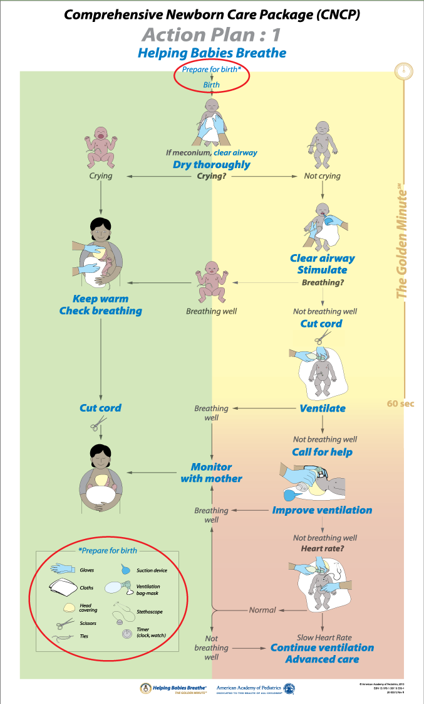
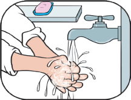
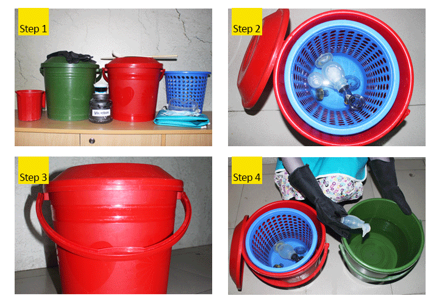

Pic: Action Plan# 1
Askill birth attendant can save the lives of babies. She must be present at birth and prepared to take immediate action. By one minute after birth, ‘’the Golden Minute’’ a baby should start breathing well or have provided with bag-mask ventilation.
A skilled birth attendant
- Can help a baby who does not breathe
- Ensures warmth, cleanliness, cord care and breastfeeding for all babies
Preparation for a birth
Identify a helper and review the emergency plan
Prepare the birth companion or another skilled helper to assist if the baby does not breathe. A skilled helper or birth companion can assist in caring for the baby and mother.
The emergency plan should include communication and transportation to advanced care facility.
Prepare the area for delivery
The area where a baby is born should be clean, warm and well lit.
Help mother wash her hands, chest and abdomen to prepare for skin-to-skin care.
Close windows and doors to stop drafts. Ensure ideal room temperature from 25-280C (77 – 82.40F)
Use a portable lamp if needed to assess the baby.
Good hand washing helps prevent the spread of infection. Wash hands thoroughly with soap and clean water followed by alcohol based solution before and after caring for a mother or a baby.Gloves protect you from infections carried by blood and body fluids.
Prepare an area for ventilation
Prepare a dry, flat, hard and safe space for the baby to receive ventilation if needed. In addition to a safe delivery kit, have equipment to help a baby breathe. Equipment should be disinfected before and after use and kept clean.
Prepare equipment
Collect and arrange safe delivary kit (dry cotoon cloth-2 pieces, cap sterile thread, scissor/ blade, gloves) suction device, sthetescope, watch/timer, bag and mask.
Check equipment
Check that all equipment and supplies are ready for use in the area for ventilation. Test the function of the bag- mask and sucker.

1. Squeeze the ventilation bag and look for the valve in the patient outlet to open as you squeeze. This shows the device is ready to deliver air to a patient.
2. Seal the mask tightly to the palm of your hand and squeeze hard enough to open the pressure release valve. This shows that air which cannot be delivered through a blocked airway will escape through the pressure relief valve.
Function of the bag-mask
Cleaning and disinfection of bag and mask and other resuscitation equipment
As a part of birth preparation before every delivery, bag, mask and otherequipments have to be properly cleaned and disinfected before and after use.
- Disassemble the ventilation bag, mask and suction device
- Disinfect all parts by submersion in 0.5% Chlorine solution for 10 minutes then rinse with clean water.
- Boiled for 20 minutes or using autoclave
- Allow all parts to air dry completely
- Reassemble all parts before use
Hand Washing and Decontamination

Steps of Hand Washing
Soap along with clean water should be kept ready for washing hands properly. If there is no tube well available nearby, then hands should be washed under free-flowing water or the helper should be advised to pour water on the hands. If there are things like wrist watch, rings or other ornaments on the hand or fingers, they all should be taken off, so that all parts of the hands can be cleaned properly. Nails should be trimmed and clean. All Parts of the hands wash thoroughly with soap for 40 to 60 secounds.
The following steps should be followed in washing hands:
- Wet hands with running water. (Pic 0)
- Apply enough soap to cover all surfaces (Pic 1)
- Rub hands palm to palm (Pic 2)
- Right palm over left dorsum with interlaced fingers and vice versa (Pic 3)
- Palm to palm with fingers interlaced (Pic 4)
- Back of fingers to opposing palms with fingers interlocked (Pic 5)
- Rotational rubbing of left thumb clasped in right palm and vice versa (Pic 6)
- Rotational rubbing, backwards and forwards with clasped fingers of right hand in left palm and vice versa (Pic 7)
- Rinse the whole hand thoroughly with running water (Pic 8)
- Dry thoroughly with a clean towel or dry the hands upright keeping them in the air (Pic 9)
Things to remember
- Drying the hands properly after washing is an integral part of hand washing and this should be emphasized or stressed upon
- Should use a good quality soft soap that produces a lot of foam easily
- Should rub thoroughly to wash both hands
- Elbows should be kept lower than the hands at all times during washing hands
- Hands should be washed up to the wrists of both hands
- Babies should not be touched at all with wet hands
How to dry the hands?
- Dry the hands using clean towels or keeping the hands upwards in air
When to wash the hands?
To keep the babies safe from infection, mother and the other caregivers of the baby should always keep their hands clean and to maintain that they should always wash their hands with soap and running water.
- During labour, before touching the mother and baby
- Before feeding or helping to feed the newborn
- Before examining the baby
- Before providing injection to the baby
- Before changing clothes or bathing the baby
- Before preparing for cord care
- After cleaning the babies excretion
Pic: Handwash Steps
Pic: Hand Washing
Decontamination
Why decontamination is done?
- Life-threatening infections like HIV, Hepatitis, and other micro-organisms can be prevented by decontamination
- Decontamination of all instruments also keep both the service providers and the patients’ safe from a lot of infections
Steps of decontamination
Step 1: 0.5% Chlorine solution should be made by mixing 100 gram of Chlorine in 5 litre of clean water (20 gram of Chlorine in 1 litre) in a red plastic bucket and kept covered with the lid.
Step 2: After use, all instruments should be immersed in a strainer within this bucket filled with 0.5% chlorine solution. In case of instruments with many parts, they should be dismantled as far as possible and immersed afterwards. It’s important for all instruments to be completely immersed and the bucket is kept with lid cover.
Step 3: The instruments should be kept immersed for at least 10 minutes after the last instrument is immersed in the chlorine solution.
Step 4: After 10 minutes, the instruments should be picked up from the perforated strainer and transferred to the green bucket and to be washed thoroughly with clean water.
Instrument needed for praparation of 0.5% chlorine solution:
Water, bleaching powder, measuring cup, eye protector, strainer, stirrer, makintosh, utility gloves, and bucket with lid (red and green colour).

Pic: Steps of Decontamination